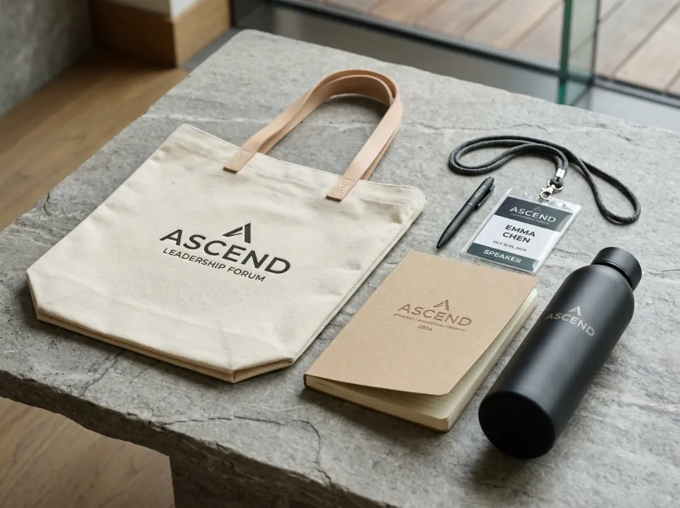

5 Item Wajib dalam Seminar Kit yang Benar-Benar Dipakai Peserta

Merchandise seminar yang sukses bukan diukur dari banyaknya pernak-pernik murah dalam tas, melainkan dari seberapa sering barang tersebut dipakai kembali dalam aktivitas harian peserta. Simak 5 barang esensial pilihan kurator Hampersku yang terbukti memiliki tingkat retensi tertinggi pasca-acara serta checklist pengadaan bebas kendala teknis.
1. Mengapa Nilai Guna (Utility) Menentukan Kesuksesan Event
Berapa banyak goodie bag seminar yang pernah Anda terima namun akhirnya berakhir tertumpuk di gudang atau langsung dibuang ke tempat sampah? Fenomena ini adalah momok terbesar bagi divisi humas dan panitia acara korporat: anggaran promosi puluhan juta rupiah menguap tanpa meninggalkan jejak brand yang melekat.
Merchandise seminar modern tidak lagi sekadar menjadi "syarat formalitas" registrasi. Item-item di dalam tas berfungsi sebagai duta berjalan perusahaan Anda. Ketika peserta menggunakan botol minum atau tas jinjing pemberian Anda ke ruang rapat klien, kampus, atau pusat kebugaran, identitas brand Anda terpapar secara konsisten kepada audiens yang lebih luas.
2. Lima Item Wajib Seminar Kit Berdaya Retensi Tinggi
Berdasarkan evaluasi terhadap ratusan proyek seminar kit berskala regional hingga internasional di Hampersku, berikut lima item dengan skor retensi dan kepuasan peserta tertinggi:
1. Tote Bag Kanvas Berkualitas (Bukan Spunbond Tipis)
Tas seminar adalah impresi visual pertama yang dilihat seluruh peserta. Hindari tas berbahan kain spunbond tipis transparan yang mudah robek ketika dimasuki botol air dan laptop. Pilihlah tote bag berbahan kanvas twill 10 oz atau katun blacu tebal dengan jahitan silang (cross-stitch) pada pangkal tali agar tahan beban hingga 5 kg dan dipakai berulang kali selama berbulan-bulan.
2. Tumbler Stainless Steel SUS 304 Ramah Lingkungan
Kesadaran keberlanjutan (eco-friendly movement) mendorong pelarangan botol plastik sekali pakai di berbagai gedung konvensi. Menghadirkan botol minum tumbler vacuum insulated yang mampu menahan dingin 12 jam dengan grafir laser monokromatik menjadikan cinderamata ini sahabat setia peserta di meja kerja mereka.
3. Notebook Hardcover Spiral / Linen yang Nyaman Ditulis
Meskipun era digital berkembang pesat, riset kognitif menunjukkan bahwa mencatat poin pembicara menggunakan tulisan tangan mempertajam daya ingat. Buku catatan bersampul tebal (hardcover) kraft atau linen bergaris 80 gsm bookpaper menjamin kenyamanan menulis tanpa tembus tinta ke halaman sebaliknya.
4. Pena Logam Rollerball yang Halus
Jangan biarkan peserta mengalami kendala tinta macet atau bodi pulpen plastik pecah di tengah sesi workshop. Pena metalik dengan mata pena rollerball 0.5mm memberikan tarikan tinta yang mantap, licin, dan dapat diisi ulang (refillable).
5. ID Lanyard Sublimasi yang Lembut di Leher
Tali ID card berbahan poliester tisu dengan cetak sublimasi full color memiliki tekstur ultra-lembut di kulit leher dan tidak menimbulkan iritasi meski dikenakan selama 8 jam nonstop di dalam aula seminar berpendingin udara.

3. Perbandingan Material Murah vs Premium untuk Acara Profesional
Banyak panitia tergiur harga murah tanpa menyadari dampak buruknya terhadap citra perusahaan penyelenggara. Berikut perbandingan kualitas bahan yang perlu Anda cermati:
- Tas Jinjing: Spunbond 75 gsm (biaya Rp 5.000, daya tahan 1 minggu) vs Kanvas Katun Tebal (biaya Rp 28.000, daya tahan 2+ tahun). Pilihan kanvas melipatgandakan masa eksposur logo hingga 100 kali lipat.
- Botol Minum: Botol plastik BPA biasa vs Stainless Steel SUS 304 Double Wall. Botol stainless menjamin keamanan suhu minuman dan tidak meninggalkan bau plastik menyengat.
- Kertas Catatan: Kertas HVS tipis 60 gsm (tinta tembus pandang) vs Bookpaper Doff Chamois 72-80 gsm yang nyaman di mata dan tidak menyilaukan saat dibaca di bawah sorot lampu ruangan.
4. Tips Efisiensi Budget dan Perhitungan Lead Time Produksi
Untuk mengoptimalkan efisiensi biaya pengadaan seminar kit tanpa mengorbankan kualitas akhir, terapkan tiga prinsip penganggaran cerdas berikut:
Selalu sediakan kuantitas cadangan (buffer stock) sekitar 5% dari target registrasi untuk mengantisipasi kehadiran tamu VIP mendadak atau penggantian unit cenderamata yang terselip saat registrasi on-the-spot. Untuk melihat simulasi paket siap pakai, Anda dapat meninjau katalog Paket Seminar Kit Hampersku.
5. Checklist Verifikasi Pengadaan Seminar Kit Sebelum Produksi
Gunakan checklist praktis berikut sebelum panitia Anda menyetujui approval proofing dan mencairkan pembayaran uang muka:
- ✓ Format Vektor Resolusi Tinggi: Pastikan logo panitia dan sponsor berformat AI, EPS, atau PDF kurva agar hasil sablon dan laser tajam tanpa pecah pixel.
- ✓ Uji Ergonomi Sampel: Pegang dan coba tulis pena di atas notebook contoh, serta pastikan tali lanyard tidak kaku saat menyentuh kulit leher.
- ✓ Lead Time dengan Buffer Kirim: Jadwalkan pengiriman tiba di hotel atau venue seminar paling lambat H-3 sebelum registrasi dibuka.
- ✓ Pemisahan Kardus Berlabel: Minta vendor memilah paket per kategori (VIP kit vs Peserta Reguler) untuk mempercepat alur meja registrasi.
6. FAQ — Pertanyaan Umum Seputar Pengadaan Seminar Kit
Berikut adalah kompilasi tanya jawab teknis yang sering diajukan panitia konferensi, event organizer, dan instansi pendidikan saat berkonsultasi dengan tim Hampersku.
Waktu produksi standar untuk seminar kit berkisar antara 5 hingga 10 hari kerja setelah approval mockup digital dan konfirmasi pembayaran uang muka. Untuk pesanan express kilat, tim Hampersku juga menyediakan jalur prioritas dengan lead time 3-4 hari kerja sesuai ketersediaan bahan baku.
Bisa! Setiap item seperti tote bag (sablon presisi atau polyflex), botol minum (laser grafir atau UV print), notes (cetak sampul full color), dan lanyard (print sublimasi warna tajam) dapat dipersonalisasi dengan logo institusi, nama event, maupun logo sponsor kegiatan.
Minimal pemesanan untuk paket seminar kit di Hampersku sangat fleksibel, mulai dari 30 paket. Untuk kuantitas di atas 100 unit, Anda akan mendapatkan penyesuaian harga grosir korporasi yang jauh lebih ekonomis berkat efisiensi skala produksi cetak.
Tentu saja. Untuk pemesanan dalam skala besar (di atas 150 unit), kami dapat membuatkan sample proofing fisik satu set lengkap untuk diperiksa kualitas bahan dan akurasi warna logonya sebelum proses produksi massal dijalankan penuh.
Hampersku bekerja sama dengan jaringan ekspedisi kargo terpercaya ke seluruh Indonesia. Setiap paket dikemas dengan inner plastic protection dan kardus kargo berlapis tahan benturan serta dikirim langsung ke alamat venue hotel, gedung konvensi, atau kantor sekretariat panitia.
Rizky memiliki pengalaman lebih dari 6 tahun dalam dunia kurasi corporate gift, souvenir event, dan luxury packaging di Indonesia. Ia memimpin tim strategic sourcing Hampersku dalam mengelola pengadaan bingkisan korporat untuk lebih dari 200 klien perusahaan per tahun, mulai dari institusi kementerian, BUMN, perbankan, hingga event konvensi internasional.